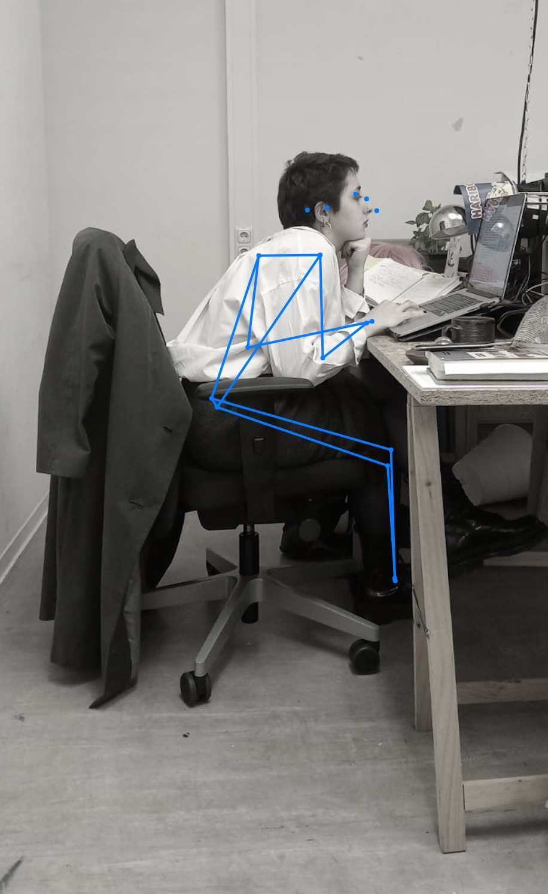
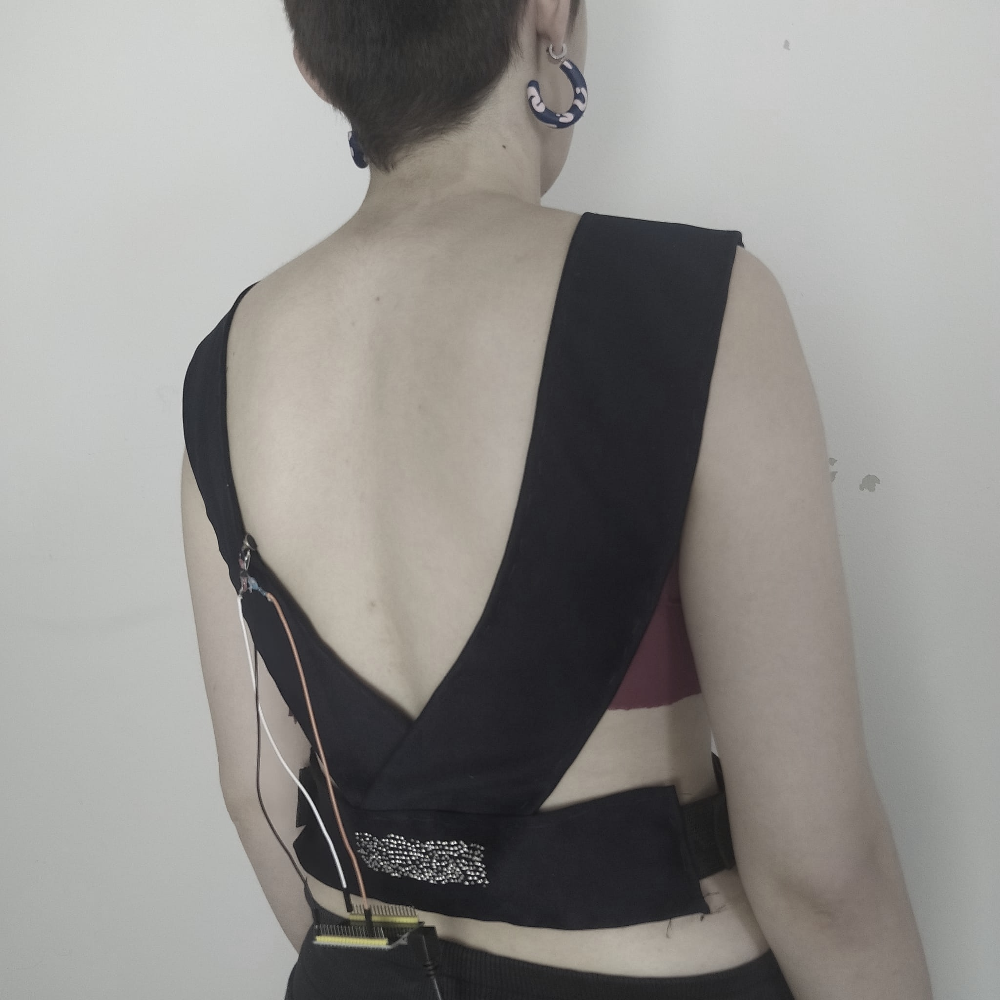
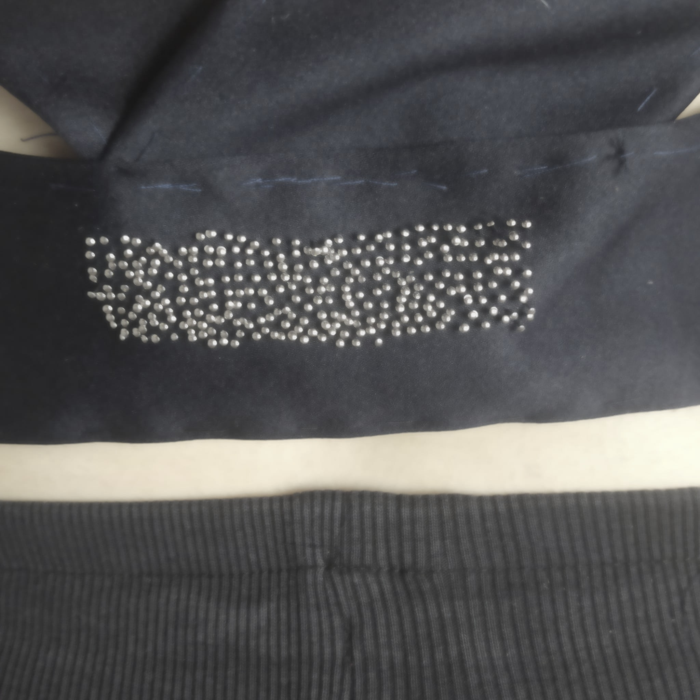

Behiye Erdemir

Behiye Erdemir
Body posture can change according to the necessities of the job. These necessities may cause different senses in different parts of the body. When I consider myself as a case, I observe that my relationship with money affects my body not only mentally but also physically.
Based on Figures, which is candid shot, I can say about my body: it is less active, it can stay in a sitting position for hours, the shoulders bend forward after a while. Besides, the mental feelings are exhausting and stressful. The purpose of this project is to evaluate these physical and mental effects caused by my money-making method and carry these effects to a wearable suit. For the money- making method, cryptocurrency trading, which I’ve experienced earlier, is used.
The situation where I ignored the physical effects became noticeable for me in Body Analysis made within the scope of Fashionable Technology II (by Ricardo O' Nascimento). In Figure, I expressed the feelings in different parts of my body with different colors. Red and black represent pain and discomfort. I think that these pains, which are intensely located in my shoulder blades and lower back region, are caused by the specified sitting position.
My experience in crypto trading that I have done for a short time has resulted in following the stock market constantly in order not to miss the change in prices. To prevent constantly looking at the screen, a bot that can automatically follow the Binance for a specific currency coded with Python. Besides, buy/sell features was included to trade automatically.
I planned to use a tactile sensor that would have a positive effect on my existing pain when the bot got profit. When the bot lost money, I firstly planned to use a sensor that would trigger pain in another region negatively.
However, during the prototype, the sensor scheme was changed. For the negative effect, it is aimed to awaken a sense that will cause constant pain. Because the current process of earning money contains stress by itself.
The giving massage sense on the shoulder blades is provided by vibration motors. It is planned to use 3 motors for each shoulder. And for the lower back part, it is planned to use bunch of needles to give discomfort.
This bot was tested with Test Coins. It follows a certain winning rate and trades in case of profit with the current money. This transaction information is transferred to the Cloud environment. The ESP32 microcontroller in the wearable suite has an internet connection and can access the transaction information in the cloud.
In the case of profit, the vibration motor works for 10 seconds. In cases where there is a loss or no operation, the motor is in a closed state.
The suit is made on hand by using textile materials. It overlaps wished points on the shoulder and the lower back areas.
For the prototype, there is only one vibration motor on the left shoulder. And the bunch of needles are attached to the back lower part of the suit.
This project was designed for my personal experience and my body. The needles don’t give me injury, but it feels uncomfortable while breathing also. And the sense of the vibration motor feels like a massage. It gives the senses to me as I planned at the beginning. In the future, the suit can be sewed by the sewing machine, the circuit can be attached more stable to the suit in a proper way and a pocket can be made for the ESP32 microcontroller.